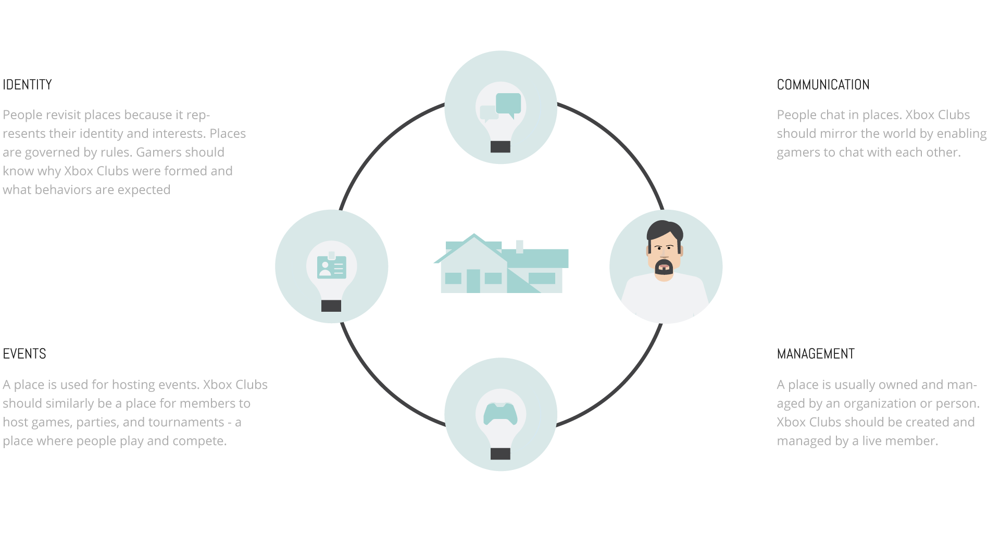
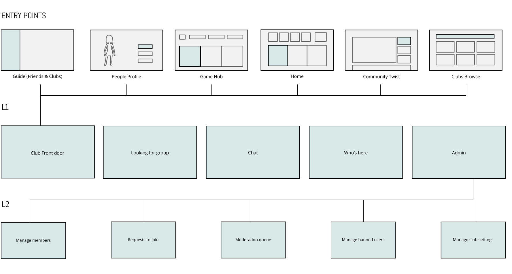
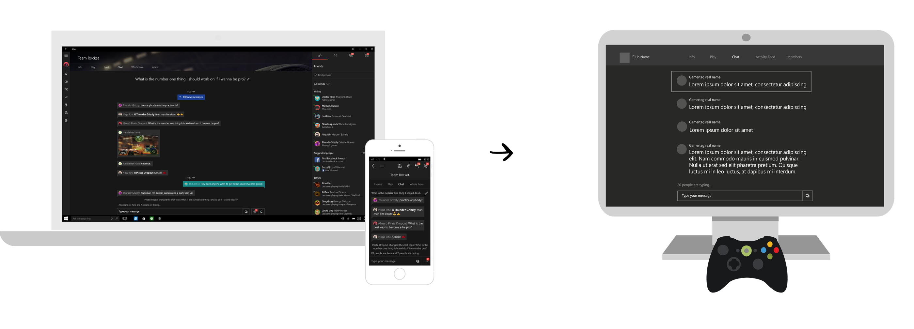
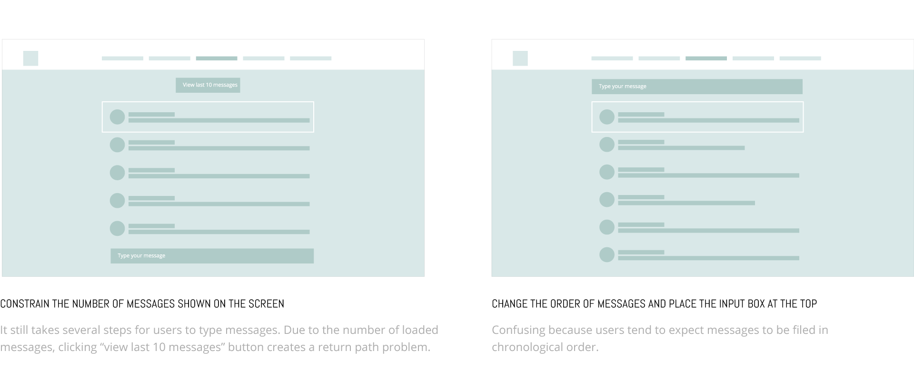
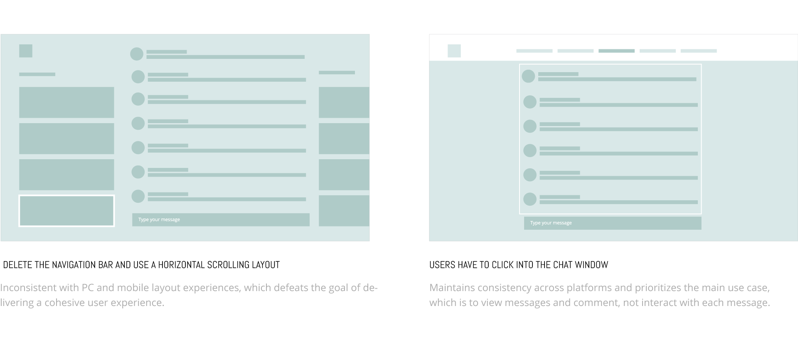
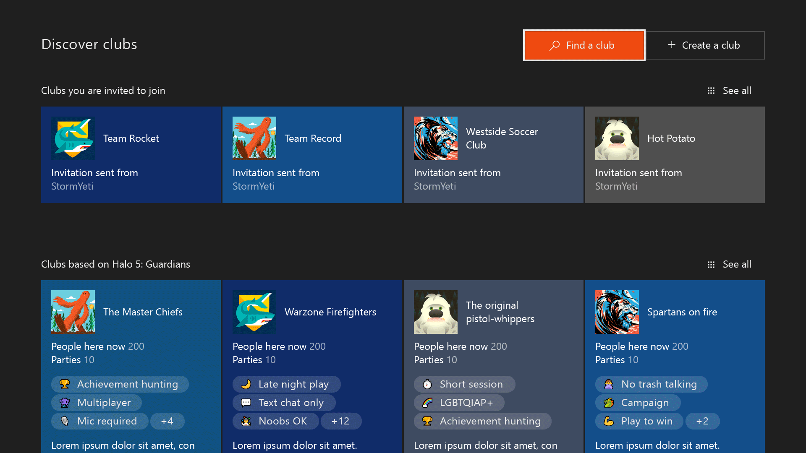

Xbox clubs
Xbox clubs are gamer-created and moderated groups that can help you meet people and grow communities of gamers who love the
same things you do.
Duration: 6 months, 2016 | Role: Lead designer, interaction design
Duration: 6 months, 2016 | Role: Lead designer, interaction design
01. Problem: Social gaming is not safe
Gamers want to have fun playing on Xbox Live, unfortunately the current social situation is unpredictable and violent.
Anonymity combined with little chance of receiving any punishment for bad behavior created an environment that is unfriendly
for many Xbox users.

02. Goal: Build a safe environemnt for social gaming
For users: Find similar gamers online to chat and play together under a safe social enviroment.
For business: Increase multiplayer hours and repeat play.
03. How: Use "place" metaphor to create experience in Xbox live
Ownership Places with "owners" are safer. Owners can ask people to leave the premises if they don't behave accordingly to the place environment.
Repeated visits People often return to places. The frequency they have with a place, the more trust they have. We start with a hypothesis: Once we build user-generated and user-managed clubs which mimic the real world "place," our users will create better social environment. The challenge is how do we translate physical place into Xbox live? We first explored some obvious attributes of a "place" :

04. Framework: Apply "place" metaphor
05. Research: What are social rules on xbox live?
As we are creating "places" in Xbox live, one thing we want to emphasis is those "social rules" a place usually have.
Those rules are created by the place owner to establish a unique social enviroment. But what are those social rules
in the gaming world?
Through secondary research,interviews and testing， user researchers have defined the follwing three categories of social rules. We think using "tags" to represent those social rules are preferred because tags are easier to searh, filter and summarize.
Through secondary research,interviews and testing， user researchers have defined the follwing three categories of social rules. We think using "tags" to represent those social rules are preferred because tags are easier to searh, filter and summarize.

06. IA: Scope the work
In my design process, I like to start from big and then narrow down to refine details of every aspect of the project.
I think to design a good experience, we need to answer three main questions to scope the work.

- 1. How do users know about this product/experience
- 2. How do users interact with the product/ experience
- 3. How do users return back to the product/experience
07. Wireframes to prototypes: Solve cross-platform challenges

I explored different options and here are some of my rationals to choose the last option as the design proposal.


After I roughly knew my design direction, I made a prototype to test out the interaction and the overall look and feel.
08.One cohesive experience across platforms
A club owner creates a club
Club owner defines the type of the club, adding tags to represent how he wants the members behave and customize the look of the club.
Others can discover a club through search or suggestions
Gamers can find a particular club by searching for its name or description, they can also filter down clubs by tags and games

Play in the club

Club members can create a post to call up others to play with them or they can just create a party to start right away.
Communicate in the club
If the gamer is not convinient to play, he/she could just chat with the community and talk about some interesting gaming topics
Club moderators manage the club
The whole project is released to retail in November.
There are ~4M unique club users on 1/30, of which 2.5M were active in January.
Here are some quotes from Twitter and Reddit.
Moderators of the club will manage reports and ban toxic gamers to make sure the club is a safe place for its members
09.Impact
There are ~4M unique club users on 1/30, of which 2.5M were active in January.
Here are some quotes from Twitter and Reddit.